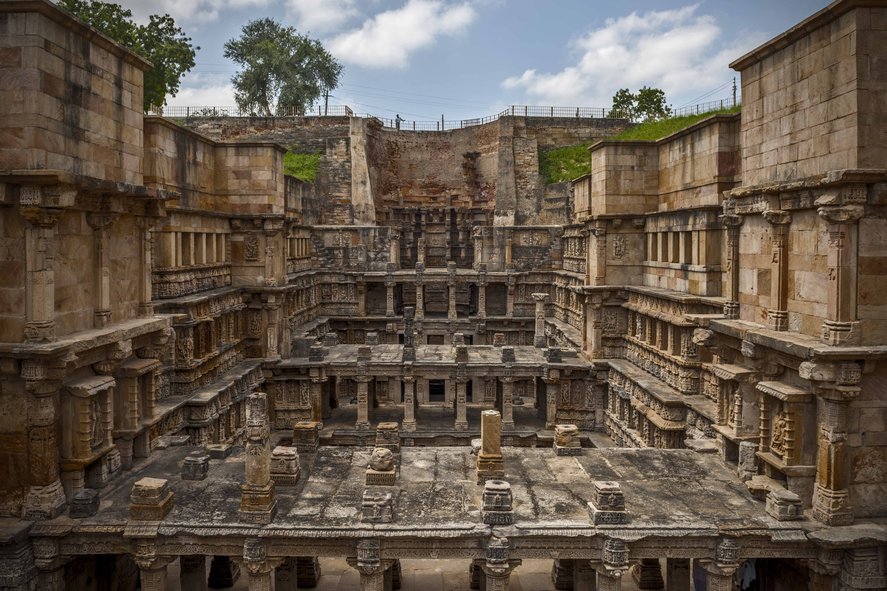
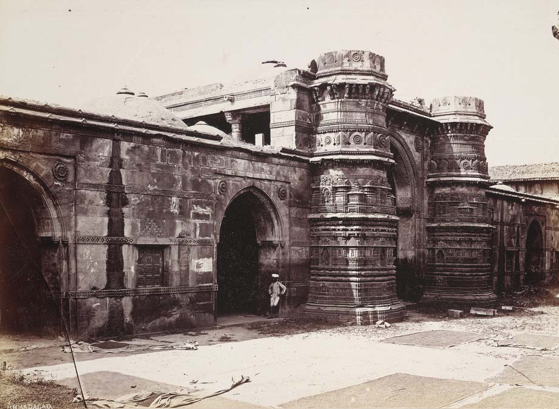
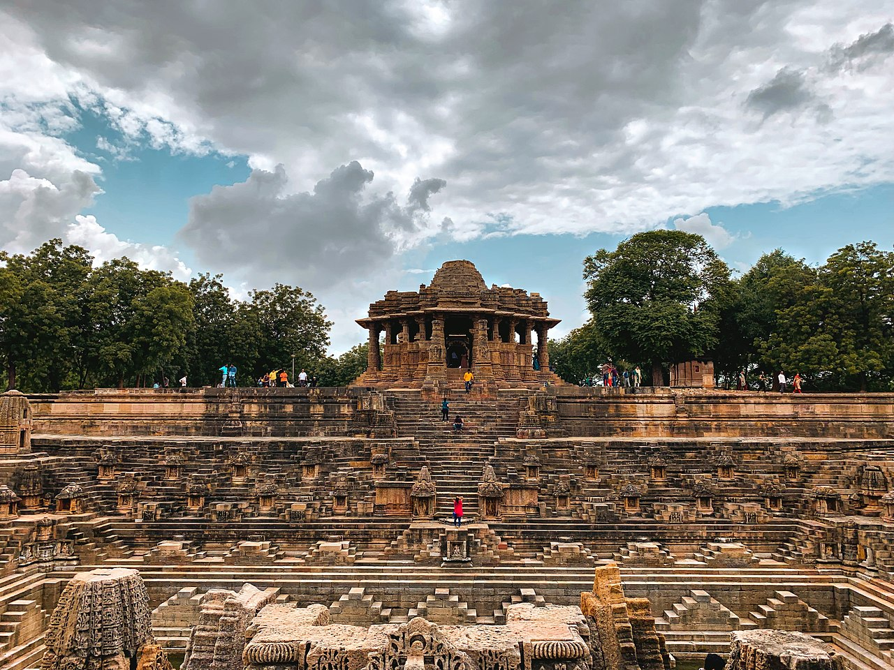
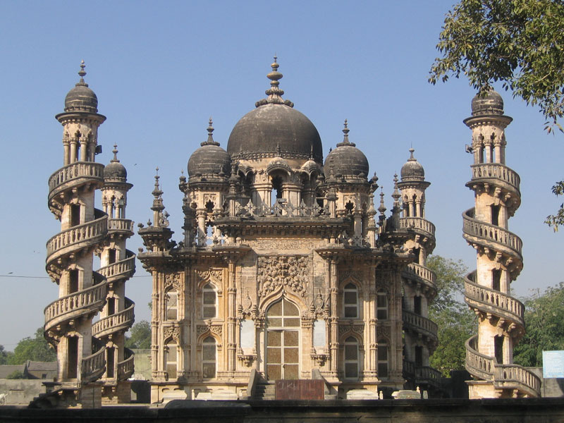
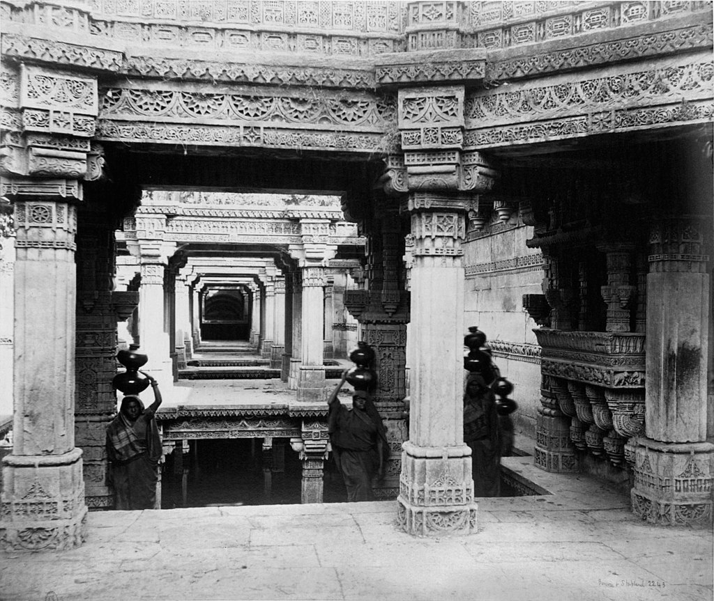

Rani's Stepwell
Rani (Queen) Udayamati commissioned this vav or stepwell, in 1063 in the memory of her husband King Bhimdev I of the Solanki dynasty. The vav was later flooded by the nearby Saraswati river and silted over until the late 1980s, when it was excavated by the Archeological Survey of India, with the carvings found in pristine condition.

Queen's Tomb
The Queen's Tomb is east of Badshah no Hajiro, across the street leading to Manek Chowk.Although squatters have cosiderably encroached on the surroundings, they add a lot of color with the bright buntings and decorative objects that they make and display.

Modhera
The Sun Temple is a Hindu temple dedicated to the solar deity Surya located at Modhera village of Mehsana district, Gujarat, India. It is situated on the bank of the river Pushpavati. It was built after 1026-27 CE during the reign of Bhima I of the Chaulukya dynasty. No worship is offered now and is protected monument maintained by Archaeological Survey of India.

Uparkot Fort
Uparkot Fort, is located on a plateau in the middle of town. It was originally built in 319 BCE during the Mauryan dynasty by Chandragupta. The fort remained in use until the 6th century, when it was abandoned for about 300 years, then rediscovered by the Chudasama ruler Graharipu in 976 CE. The fort was subsequently besieged 16 times over an 1000-year period. One unsuccessful siege lasted twelve years.

Adalaj Stepwell
Set in the quiet village of Adalaj, this vav has served as a resting place for hundreds of years for many pilgrims and caravans along their trade routes. Built in 1499 by Queen Rudabai, wife of the Vaghela chief, Veersinh, this five-storey stepwell was not just a cultural and utilitarian space, but also a spiritual refuge.